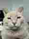
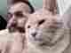
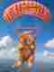
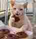
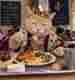

GROSDOUDOU 🐾
Chat professionnel. Siesteur de haut niveau. Aventurier malgré lui.

Voici la star !
Avec son pelage crème, ses yeux verts et son air de petit chef, Grosdoudou n'a pas besoin de parler pour se faire comprendre. Il lui suffit d'un regard… et tout le monde obéit.
📸 L'album photo de Grosdoudou




Six aventures, six photos différentes : chaque moment mérite sa place dans l’album !
📚 Les histoires de Grosdoudou
Épisode 1 — Le lit interdit 🛏️
Il est 7 h 12. L'humain soulève doucement la couverture. Mauvaise idée. Grosdoudou est installé au milieu du lit, roulé en boule comme un roi dans son château. Il ouvre un œil, pousse un petit soupir et se rendort. L'humain comprend le message : la journée commencera plus tard.
Épisode 2 — L'affaire du donut 🍩
Une boîte de donuts arrive à la maison. Grosdoudou mène l'enquête : reniflage à gauche, inspection à droite, puis patte discrètement posée sur le carton. Quand on se retourne, il est assis devant la boîte avec son air le plus innocent. L'enquête n'a jamais été résolue.
Épisode 3 — Le parachute Cochonou 🪂
Un jour, Grosdoudou se retrouve équipé d'un parachute rouge à carreaux. Il survole les nuages avec dignité. En bas, les humains paniquent. Lui ? Il pense déjà à la collation prévue après l'atterrissage. Il réclame cinq étoiles pour son atterrissage.
Épisode 4 — Le selfie avec l'humain 🤳
Son humain veut prendre une photo à deux. Grosdoudou s'approche tellement près de l'objectif qu'il prend toute la place. Résultat : un selfie où l'on voit surtout une magnifique moustache, deux yeux mi-clos et un humain relégué à l'arrière-plan. Exactement comme il le souhaitait.
Épisode 5 — Le grand jugement 👑
Les croquettes ont trois minutes de retard. Grosdoudou s'assoit devant sa gamelle et fixe son humain. Pas un miaulement. Pas un mouvement. Juste ce regard qui dit : « Je pensais pourtant avoir été très clair. » Le service est immédiatement accéléré.
🎲 Que ferait Grosdoudou ?
Une boîte de friandises s'ouvre dans la cuisine. Quelle est sa réaction ?
⭐ Sa fiche de star
Super-pouvoir : apparaître dès qu'un paquet s'ouvre.
Point faible : les friandises et les endroits moelleux.
Devise : « Si je rentre dans le carton, c'est à moi. »